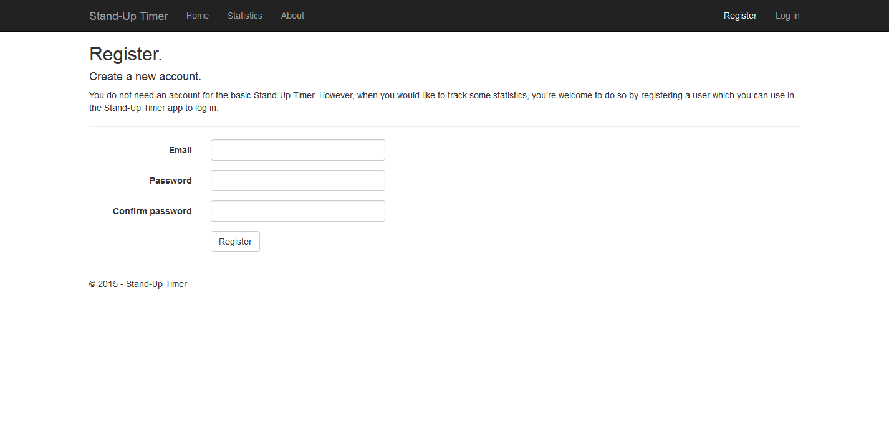
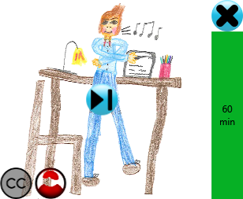

Welcome to the Stand-Up Timer.
Willkommen zum Stand-Up Timer.
This program came to life because I read two articles: one about sit-stand-dynamcis and the other one about Squirrel.Windows. So, the Stand-Up Timer is a Windows program that reminds you when it is best to stand up from your seat and continue working in a standing position. Equally it reminds you to sit down again when you stood long enough.
Wegen zweier Artikel wurde dieses Programm geboren: einer über die Sitz-Steh-Dynamik und der andere über Squirrel.Windows. Der Stand-Up Timer ist ein Windows Programm das Dich daran erinnert, rechtzeitig von Deinem Platz aufzustehen und im Stehen weiterzuarbeiten. Ebenso erinnert es Dich daran, sich wieder hinzusetzen, wenn Du lange genug gestanden bist.
Check out the downloadable setup file on the right!
Schau Dir das downloadbare Setup rechts an!
How to use the Stand-Up Timer.
Wie man den Stand-Up Timer verwendet.
Overview
Überblick
After installation, the program starts immediately.
Nach der Installation startet das Programm sofort.
It begins with the sitting phase.
Es fängt mit der Sitzen-Phase an.
When you move the mouse over the image, you can see the available controls:
- The close button
- The skip button
- The attribution button
- The login button
Wenn Du Deine Maus über das Bild bewegst, kannst Du die vorhandenen Schaltflächen sehen:
- Die Schließen Schaltfläche
- Die Überspringen Schaltfläche
- Die Attribuierung Schaltfläche
- Die Anmelden Schaltfläche
Login
Anmelden
If you like, you can create yourself a new user account in two steps:
- Open the login dialog in which the register link is
- Click on the link and create a new user account
- 
Wenn Du willst, kannst Du Dir in zwei Schritten ein Benutzerkonto erstellen:
- Öffne den Anmelden Dialog, in dem der Registrieren-link ist
- Klicke auf den link und erstelle ein neues Benutzerkonto
A user account is not mandatory - only the statistics are not available then.
Ein Benutzerkonto ist nicht zwingend notwendig - lediglich die Statistiken stehen Dir sonst nicht zur Verfügung.
In case you created a user account, you can now login at the login dialog.
Falls Du Dir ein Benutzerkonto erstellt hast, kannst Du Dich jetzt im Anmelden Dialog anmelden.
When you entered wrong credentials, you will see an error message and you can retry.
Hast Du falsche Anmeldedaten eingegeben, siehst Du eine Fehlermeldung und kannst es noch einmal versuchen.
You can see on the internet how virtuous you are.
Im Internet kannst Du sehen, wie tugendhaft Du bist.
You just need to log in once. Next time, you will be logged in automatically.
Die Anmeldung muss nur einmal durchgeführt werden. Das nächste Mal wirst Du automatisch angemeldet.
Usage
Verwendung
You can see in different places how much time is left before changing to another position:
- The progress bar shows the remaining time as bar and text
- The taskbar shows the remaining time as a progress bar and as a part of the title
Man kann an verschiedenen Stellen sehen, wie viel Zeit übrig ist, bevor man die Position wechseln muss:
- Der Fortschrittsbalken zeigt die Restzeit als Balken und als Text an
- Die Taskbar zeigt die Restzeit als Fortschrittsbalken und als Teil des Titels
You have two choices to go to the next position:
- Wait for the time to elapse
- Use the skip button
Du kannst auf zwei Arten zur nächsten Position gelangen:
- Warte bis die Zeit verstrichen ist
- Verwende die Überspringen Schaltfläche
When you waited for the time to elapse, the application will shake, the app will get into view and the OK button is visible.
Wenn Du wartest, bis die Zeit verstrichen ist, wird das Programm sichtbar wackeln, in den Vordergrund kommen und die OK Schaltfläche wird sichtbar.
After clicking the OK button, the shaking stops and the time is ticking again.
Nachdem man auf OK geklickt hat, hört das Wackeln auf und die Zeit läuft wieder.
When you close the application, the screen position will be saved and on the next startup, the app starts on that position again.
Wenn Du das Programm schließt, wird die Bildschirmposition gespeichert und beim nächsten Start wird das Programm an der gleichen Position wieder angezeigt.
Miscellaneous
Verschiedenes
You can see the attributions of the used images when moving the mouse on the attribution button:
Du kannst die Attribuierungen der verwendeten Bilder sehen, wenn Du die Maus auf die Attribuierung Schaltfläche bewegst: